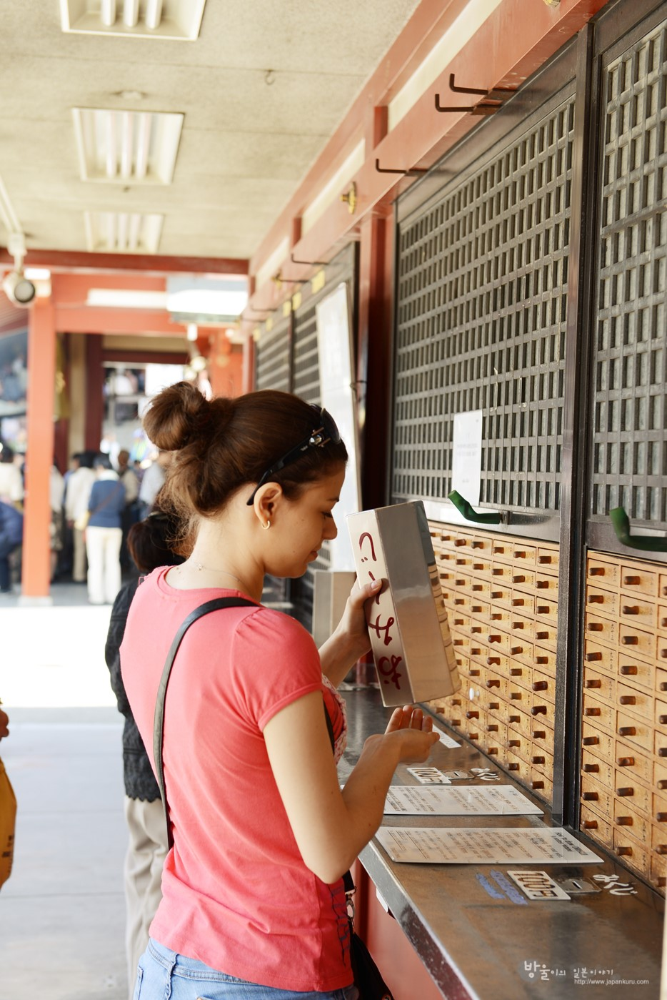
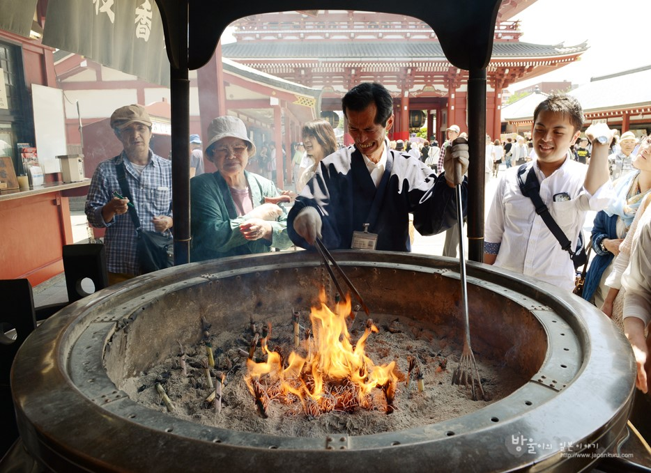
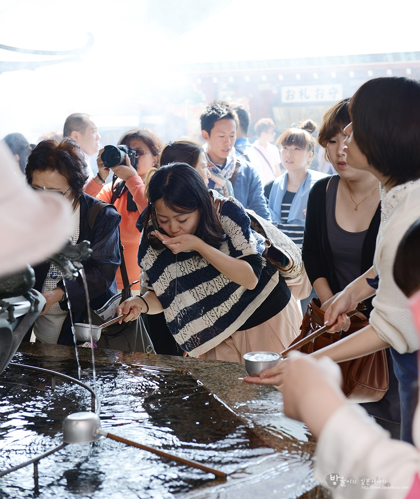
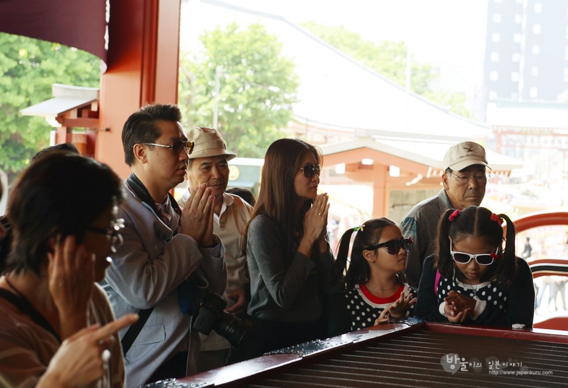
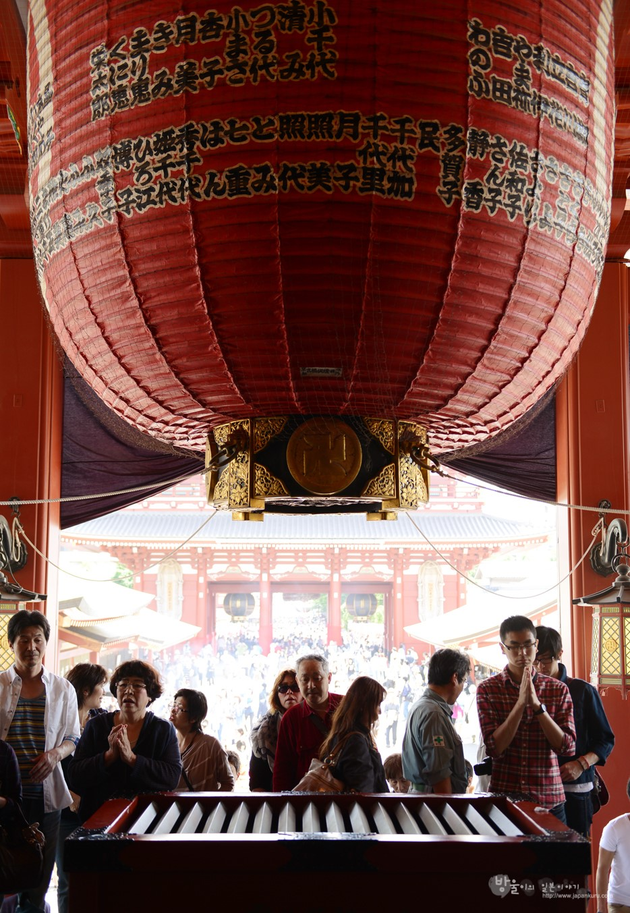

일본 여행
|  | 오미쿠지 : 신에 기원해서 길흉을 점치는 제비.오미쿠지에는 대길,길,소길,흉등 여러운세가 있습니다.직업,시험,여행,찾는 물건등 다양한 분야에 관한 운세가짧은 문장으로 적혀있습니다.상자를 흔들어 번호가 적힌 나무막대기를 뽑고, 그번호의 오미쿠지와 교환합니다.대부분의 신사에 있는 오미쿠지는 100엔으로 가능합니다.읽고난뒤에는 신사내의 나무가지나 오미쿠지용 쇠줄등에 오미쿠지쪽지를 묶습니다. |
|  | 오키요메 : 키요메는 맑게 하다, 정하게 하다, 깨끗이 하다 의미입니다.아사쿠사 센소지에서는 향앞에서 머리에 연기를 씌우는 모습을 볼수있지요.키요메를 하는것인데요 이렇게 머리에 키요메를 한뒤 초즈야에서 입과 손을 키요메를 합니다. |
|  | 초즈야 : 신사에서 참배하기전에 초즈야의 물로 손을 깨끗히 씻고입안을 행굽니다.국자로 물을 푸어 손에 뿌리고 세속의 부정을 씻는다는 의미인것이지요. |
|  | 새전넣기 : 참배하기위해 단상위로 올라가면 사진과같은 새전함이 있습니다.이것은 신에게 올리는 돈을 넣는곳으로참배전에 이 함에 돈을 넣습니다. |
|  | 이례 이박수 일례 : 새전을 넣는뒤 종을 울립니다.그리고 두번절을 한다 두번박수를 친다 한번절을하고 신을 참배한다 이때 소원을 빕니다.이것이 바로 일본인들이 신사에서 참배할때 행하는 이례 이박수 일례 입니다. |